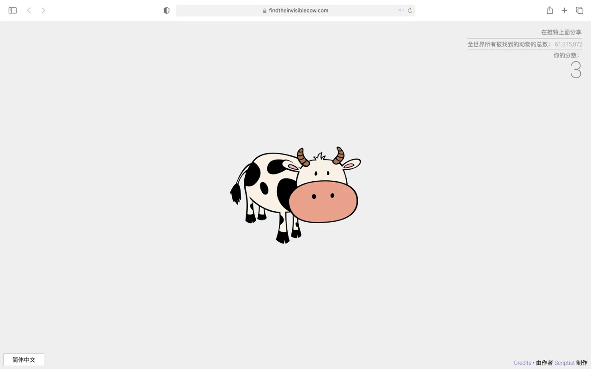
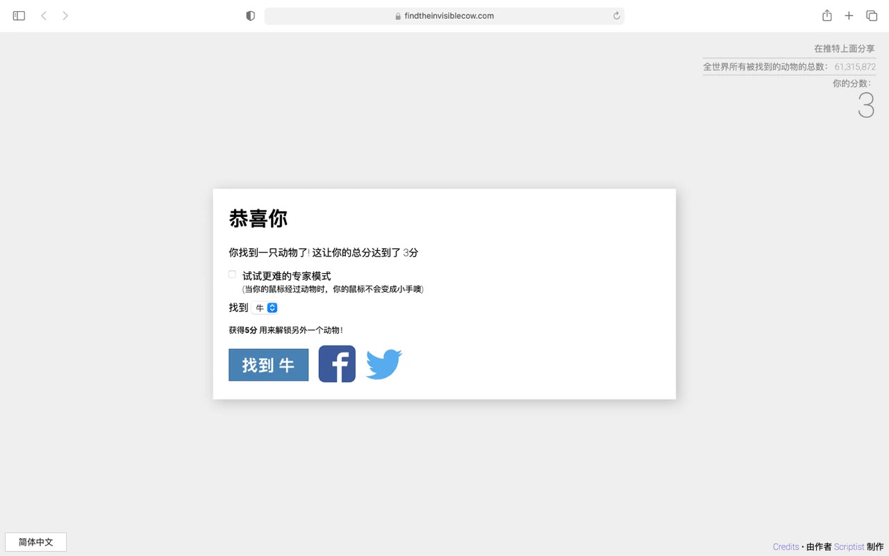

这是一个非常鬼畜魔性的网站，不得不佩服开发者的脑洞🕳
在这个网站上，我们可以通过声音的大小来寻找隐藏的牛，羊以及其他动物。
 🌈传送门：https://findtheinvisiblecow.com
这是一个有趣的 3D 小车游戏。
你可以通过 WASD 键或方向健来控制小车车，开向你想去的地方。
网站的背景色调是温暖治愈的黄昏色 🌆
看起来美观又舒适，体验感也很棒。
还没拿到驾照的小伙伴也可以放心大胆地驾驶这辆模拟小车练练手，找找方向感。
平常玩一玩也是非常治愈解压的。
游戏过程中你还会发现一些隐藏的小彩蛋 🐣
这里就先不透露，等着大家自己去发现🔍
🌈传送门： https://bruno-simon.com